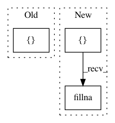

79367410b43a54f3fc7674067fa962ed55b1d6bb,lifelines/fitters/npmle.py,,reconstruct_survival_function,#Any#Any#Any#Any#,128
Before Change
def reconstruct_survival_function(probabilities, turnball_intervals, timeline, label="NPMLE"):
index = [0.0]
values = [1.0]
for p, interval in zip(probabilities, turnball_intervals):
if interval.left != index[-1]:
index.append(interval.left)
After Change
TIHI
index = []
values = []
for i, (p, interval) in enumerate(zip(probabilities, turnball_intervals)):
if i == 0:
index.append(interval.left)
index.append(interval.right)
values.append(1.0)
values.append(1 - p)
continue
if interval.left != index[-1]:
index.append(interval.left)
values.append(values[-1])
if interval.left == interval.right:
values[-1] -= p
else:
index.append(interval.right)
values.append(values[-1] - p)
full_dataframe = pd.DataFrame(index=timeline, columns=[label + "_lower"])
turnball_dataframe = pd.DataFrame(values, index=index, columns=[label + "_lower"])
dataframe = full_dataframe.combine_first(turnball_dataframe).ffill().fillna(1)
dataframe[label + "_upper"] = dataframe[label + "_lower"].shift(1).fillna(1)
return dataframe
In pattern: SUPERPATTERN
Frequency: 3
Non-data size: 3
Instances
Project Name: CamDavidsonPilon/lifelines
Commit Name: 79367410b43a54f3fc7674067fa962ed55b1d6bb
Time: 2020-05-16
Author: cam.davidson.pilon@gmail.com
File Name: lifelines/fitters/npmle.py
Class Name:
Method Name: reconstruct_survival_function
Project Name: QUANTAXIS/QUANTAXIS
Commit Name: 9ed54295701c9207c1f777a3f5fa9ede51c96a14
Time: 2017-09-24
Author: yutiansut@qq.com
File Name: QUANTAXIS/QAData/data_fq.py
Class Name:
Method Name: QA_data_make_qfq
Project Name: ScottfreeLLC/AlphaPy
Commit Name: b3a4e6779890d56b8eeed039f8a18a70091bdac7
Time: 2016-03-29
Author: Mark.R.Conway@gmail.com
File Name: features.py
Class Name:
Method Name: get_factors